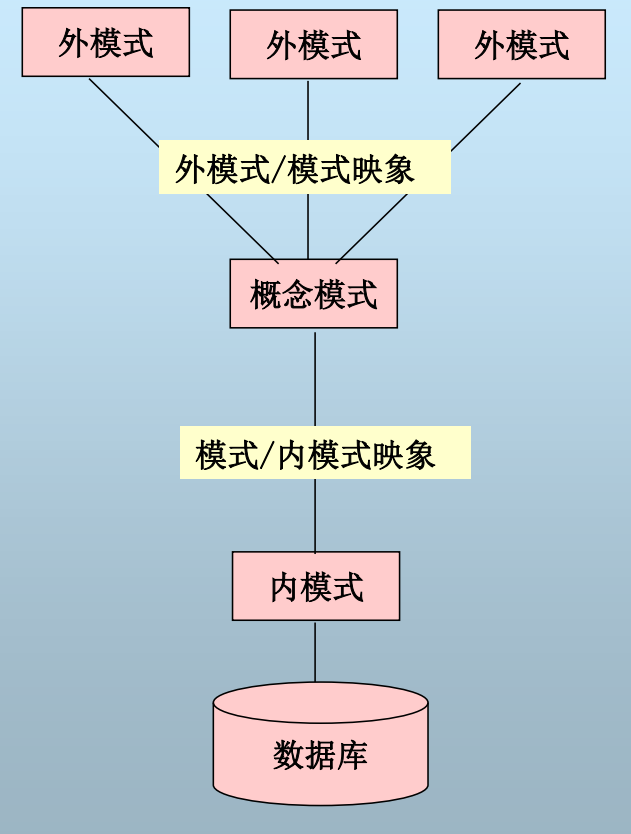
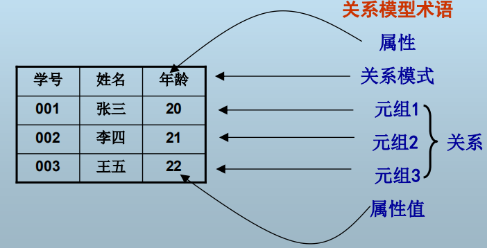
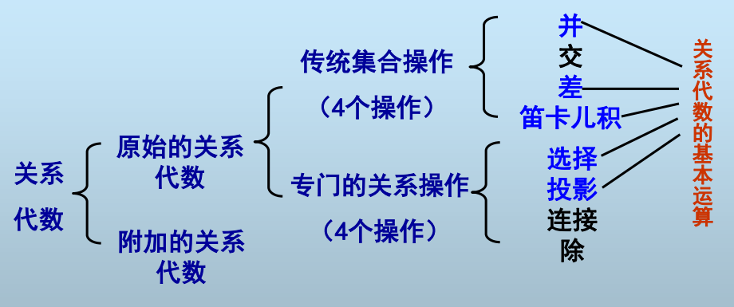
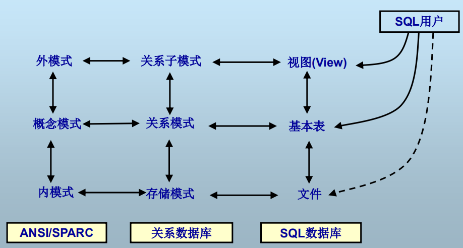
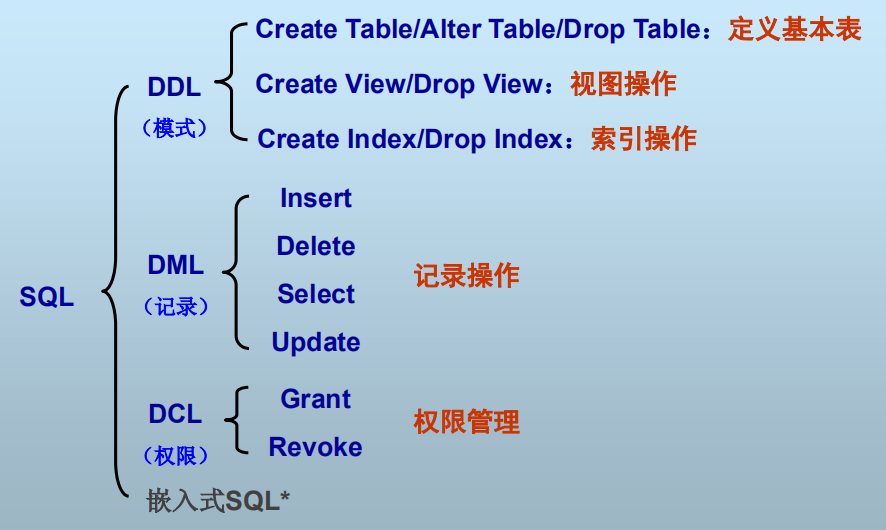
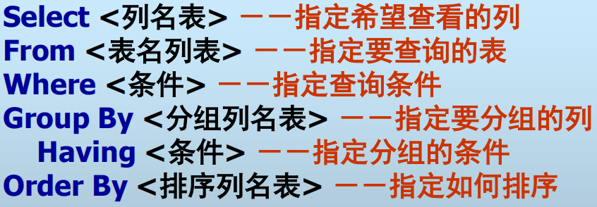

Database
This part inlcudes important topics in database.
Content outline
- Why database?
与文件系统相比，数据库有以下优势：数据共享，减少冗余，避免不一致，提供事务支持，保持完整性，增强安全性，提供并发控制，标准化
- 数据库系统内部体系结构
从DBMS的角度看，数据库内部的结构可描述为：三级模式，二级映象

- 模式(Schema)/实例(Instance)
- 外模式/模式映象：数据的逻辑独立性
- 模式/内模式映象：数据的物理独立性
- 数据库系统的外部体系结构
- 客户机/服务器(C/S)
- 浏览器/服务器
- 分布式结构
- 关系数据模型
- 数据模型
- 数据模型定义：描述现实世界实体、实体间联系以及数据语义和一致性约束的模型。
- 抽象层次：现实世界 → 概念模型 → 数据模型
- 数据模型三要素：数据结构、数据操作、数据完整性约束
- 关系数据模型
- 定义：用二维表格结构表示实体集，外码表示实体间联系，三类完整性规则表示数据约束的数据模型

- 术语：属性、元组、域、关系、关系模式、关系数据库、关系数据库模式
- 关系模式的形式化定义：R(U,D,dom,F)
- 超码、候选码、主码、替换码、外码
- 关系数据模型对应三要素
- 数据结构：关系
- 数据操作：关系代数

- 原始关系代数
- 传统集合操作：并、交、差、笛卡尔积
- 专门关系操作：选择、投影、连接、除
- 补充：重命名
- 附加关系代数
- 扩展投影（广义投影）:下标可以进行属性重命名和表达式结果命名
例如：πE#→EmployeeNum, FirstName || LastName→Name(Employee)
- 聚集函数：由值的集合返回单一的值
SUM, COUNT, AVG, MAX, MIN
- 分组：对具有相同属性值的元组的某属性进行聚集操作，产生新的二元表
例如：γ课程号，AVG(成绩)→平均成绩(R)
- 排序：对关系R按某属性排序
例：τ年龄(学生)
- 赋值：R←E，用于中间结果存储，不显示给用户
- 数据更新：删除、插入、修改
例1：Student←Student－σname=‘Rose’(Student)，从数据库中删除名字叫Rose的学生
例2：S1←S1∪{ (‘001’,’Rose’,19) }，插入一个新本科生
例3：Student←𝜋‘M’||sno,name,sex,age(σsex=‘M’(Student)) ∪ (Student－σsex=‘M’(Student))，将所有男学生的学号前加上字母“M”
- 数据完整性约束：三类完整性规则
- 实体完整性：组成主码的所有属性不为空。
- 参照完整性：参照关系的外码值必须等于被参照关系所参照的候选码的某个值或者为空。
- 用户自定义完整性：某一具体应用涉及数据必须满足的语义。
- 关系数据库语言SQL
- 数据库语言：用户与数据库的唯一接口，用户通过数据库语言进行数据存取
- 支持SQL的DBMS：MySQL、SQL Server、Access、Oracle、Sybase、DB2
- SQL数据库的术语（对应关系数据模型）：
基本表-关系，基本表结构-关系模式，记录-元组，字段（列）-属性，字段值-属性值，字段类型（列类型）-域，主键-主码，外键-外码
- SQL三级体系结构

- SQL的组成：DDL,DML,DCL

- DDL：数据定义语言，存取数据库模式，创建/修改/删除基本表
- DML：数据操纵语言，存取数据库数据,插入/修改/删除/查询记录
- 插入新记录：Insert Into ... Values ...
例：Insert Into Student(snum,sname,sex,age) Values ('1','Mary','F',20)
例：Insert Into table1(name,birth) Values ('David',str_to_date('24,12,1997','%d,%m,%Y'))
没有指定值的置空或者置默认
- 修改表中数据：Update ... Set ... [Where ...]
例：Update Student Set sex='F', age=23 Where sname='David'
例：Update Student Set grade=100
- 删除表中的记录：Delete From ... Where ...
例：Delete From Student Where sname='David'
例：Delete From Student，即把Student置为空表，区别于Drop Table
- 查询数据：SELECT...FROM...WHERE...GROUP BY...HAVING...ORDER BY...

- 查询全部记录
Select * From Student
- 查询特定的列（投影）
Select snum, sname From Student
- 查询时使用别名
Select snum as 'Student Code',sname as 'name' From Student
- 查询时使用表达式或聚集函数
Select concat(snum,':',sname) as '学号/姓名' From Student
Select count(distinct snum) as 'total person' from Student
- 查询特定的记录（选择）
Select snum,sname Where ...
- IN: Select snum,sname Where snum IN (1,3,5)
- IS [NOT] NULL: Select sname,score where score IS NULL
- LIKE: Select snum,sname where sname LIKE 'M%k_'
其中%表示任意长度字符串，_ 表示单个字符
- NOT/AND/OR: Select sname,score where score IS NOT NULL AND sname LIKE 'M%'
- 去除重复记录
Select Distinct sname,age from Student
注意：重复是对于整条记录而言的
- 排序查询结果
Select sname,age from Student Order By age ASC, sname DESC
- 分组查询（配合聚集函数）
Select sex, avg(age) as 'average age' from Student Group by sex
注意：分组属性必须全部出现在Group by子句中
- 返回特定的分组结果
Select class, avg(score) as 'avgscore' from Student Group by class Having count(*)>30
注意：聚集函数的比较式只能在Having子句中给出
- 连接查询（可顺带使用表别名）：
Select a.snum as studentcode, count(distinct b.coursecode) as coursenum from Student a, Course b where a.snum=b.snum group by a.snum having avg(b.score)>=85
注意：where后跟连接条件
- 嵌套查询
- 无关子查询：子查询语句不依赖于父查询语句返回的记录
Select snum,sname from Student where sname snum NOT IN (Select distinct snum from Course)
- 相关子查询：子查询依赖于父查询语句返回的记录
Select s.snum,s.sname from Student s Where NOT EXISTS (Select * from Course c Where c.code Not IN (Select distinct SC.code from SC Where s.snum=c.snum))
Select s.snum,s.sname from Student s Where NOT EXISTS (Select * from Course c Where NOT EXISTS(Select * from SC where SC.snum=s.snum and SC.code=c.code))
查询选修了全部课程的学生学号姓名
- 联机视图：子查询出现在from子句中
Select newS.snum,newS.sname from (Select s.snum,s.sname,count(SC.code) from Student s where s.snum=SC.snum having count(SC.code)>=2 group by s.snum) newS
查询选课数量大于等于2的学生信息
- 查询结果连接
- 并：UNION
(Select snum from Student where sex='F') UNION (Select snum from (Select s.snum,avg(SC.grade) from Student s,SC where s.snum=SC.snum group by s.snum having avg(SC.grade)>=85))
查找性别为女或平均成绩大于等于85的学生，并去除重复记录，UNION ALL命令不去除重复记录
- 差：MINUS
(Select code from Course) MINUS (Select distinct code from SC)
查询没有被选过的课程代号，MySql不支持，可以用LEFT OUTER JOIN模拟
- 交集：Intersect
- DCL：数据控制语言，存取访问控制信息
Reference
Back